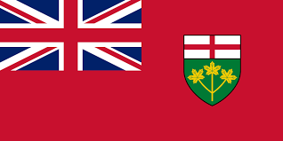
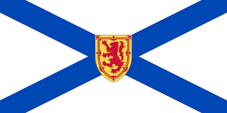
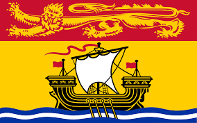
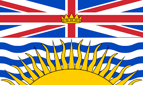
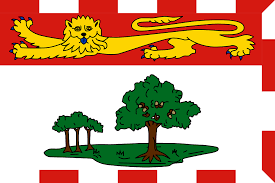
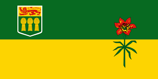
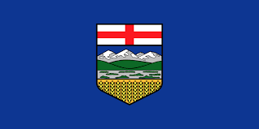
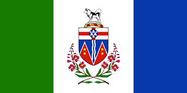

Day 3: Exploring Canada

Canada is a vast country with diverse landscapes and cultures. It offers beautiful natural scenery, rich history, and welcoming people.
Introduction to Canada
Canada is known for its stunning landscapes, from mountains and forests to lakes and rivers. The capital city is Ottawa, located in the province of Ontario.
Big Cities
Canada’s major cities include Toronto, Vancouver, Montreal, and Calgary. Each city is known for its unique culture, attractions, and landmarks.
Provinces and Territories of Canada
Canada is made up of ten provinces and three territories, each with its own unique geography and cultural heritage.
States, Their Flags, and Capital Cities in Canada
| Province/Territory | Flag | Capital City |
|---|---|---|
| Ontario |  | Toronto |
| Quebec |  |
Quebec City |
| Nova Scotia |  | Halifax |
| New Brunswick |  | Fredericton |
| Manitoba |  |
Winnipeg |
| British Columbia |  | Victoria |
| Prince Edward Island |  | Charlottetown |
| Saskatchewan |  | Regina |
| Alberta |  | Edmonton |
| Newfoundland and Labrador |  |
St. John's |
| Northwest Territories |  |
Yellowknife |
| Yukon |  | Whitehorse |
| Nunavut |  |
Iqaluit |
Ontario

Ontario is home to the nation’s capital, Ottawa, and the largest city, Toronto. It's known for its beautiful natural landscapes and the iconic Niagara Falls.
Toronto, the capital of Ontario, is a bustling metropolis known for its towering skyscrapers and cultural diversity.
Quebec

Quebec is known for its rich history and French-speaking culture. It offers scenic landscapes and historic sites like Old Quebec.
Quebec City, the capital of Quebec, is known for its historic architecture and charming old town.
Nova Scotia
Nova Scotia is a maritime province known for its stunning coastlines, lighthouses, and the historic city of Halifax.
Halifax, the capital of Nova Scotia, is a vibrant city with a rich maritime history and beautiful waterfront.
New Brunswick
New Brunswick is known for its natural beauty, including the Bay of Fundy and its unique reversing falls.

Fredericton, the capital of New Brunswick, is a charming city with a strong cultural scene and beautiful parks.
Manitoba
Manitoba is known for its vast prairies and beautiful lakes, including Lake Winnipeg and Riding Mountain National Park.

Winnipeg, the capital of Manitoba, is known for its cultural attractions, including the Canadian Museum for Human Rights.
British Columbia

British Columbia is renowned for its stunning natural beauty, including the Rocky Mountains, Pacific coastline, and vibrant cities.

Victoria, the capital of British Columbia, is known for its historic charm and beautiful gardens.
Prince Edward Island
Prince Edward Island is known for its picturesque landscapes, red sand beaches, and the famous Anne of Green Gables house.

Charlottetown, the capital of Prince Edward Island, is known as the birthplace of Confederation and offers a charming small-town atmosphere.
Saskatchewan

Saskatchewan is known for its open prairies, stunning sunsets, and the beautiful Prince Albert National Park.

Regina, the capital of Saskatchewan, is known for its green spaces and the beautiful Wascana Centre.
Alberta

Alberta is known for its breathtaking landscapes, including the Rocky Mountains and Banff National Park.

Edmonton, the capital of Alberta, is known for its festivals, cultural attractions, and the vast West Edmonton Mall.
Newfoundland and Labrador

Newfoundland and Labrador are known for their rugged coastlines, icebergs, and vibrant fishing communities.

St. John's, the capital of Newfoundland and Labrador, is known for its colorful houses and rich maritime history.
Northwest Territories

The Northwest Territories are known for their vast wilderness, northern lights, and the beautiful Nahanni National Park Reserve.

Yellowknife, the capital of the Northwest Territories, is known for its gold mining history and vibrant arts scene.
Yukon
The Yukon is known for its stunning mountains, pristine lakes, and rich Klondike Gold Rush history.

Whitehorse, the capital of the Yukon, is known for its scenic beauty and outdoor recreational opportunities.
Nunavut
Nunavut is known for its remote Arctic landscapes, Inuit culture, and the stunning Auyuittuq National Park.

Iqaluit, the capital of Nunavut, is known for its unique Inuit culture and the beautiful Frobisher Bay.
Did you know?
Canada has the longest coastline of any country in the world, stretching over 202,080 kilometers.
The official languages of Canada are English and French, reflecting the country's diverse cultural heritage.
Canada is home to the world’s largest number of lakes, with over 2 million lakes covering the landscape.
🌮 Mexico City is built on a lake, and due to its unique foundation, it is sinking at a rate of about 10 inches per year.
🌴 The Yucatán Peninsula is home to more than 6,000 cenotes, which are natural sinkholes filled with water, some of which were considered sacred by the ancient Maya.
🌵 Tequila, the popular spirit, originates from the town of Tequila in Jalisco, and is made from the blue agave plant.